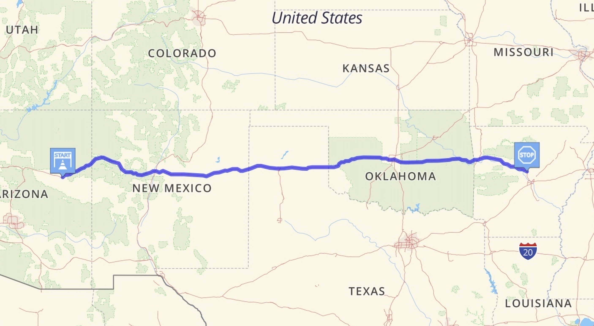

On XXX June 2027, I completed my first Iron Butt ride, the Saddle Sore 1000, riding my 2021 Yamaha Ténéré 700, 1,100 miles in 20 hours.
The Planned Route

[/index.html](https://rfreynol.github.io/saddlesore1000/) contains a publicly available website documenting the ride. [/images](https://github.com/rfreynol/saddlesore1000/tree/main/images) contains images of the odometer and gas receipts [/gpx](https://github.com/rfreynol/saddlesore1000/tree/main/gpx) contains GPS files from two devices used to record the ride: a Garmin Tread and a Garmin Montana. My [Spotwalla Trip Page](https://spotwalla.com/trip/d0a4-2383835e-2f7f/view) has tracks from both my SPOT and Garmin InReach trackers.
GPX file from Garmin Tread:
GPS file from Garmin Montana:
Live Google Map of Route with Timestamps
Rob's Spot Track
Rob's InReach Track